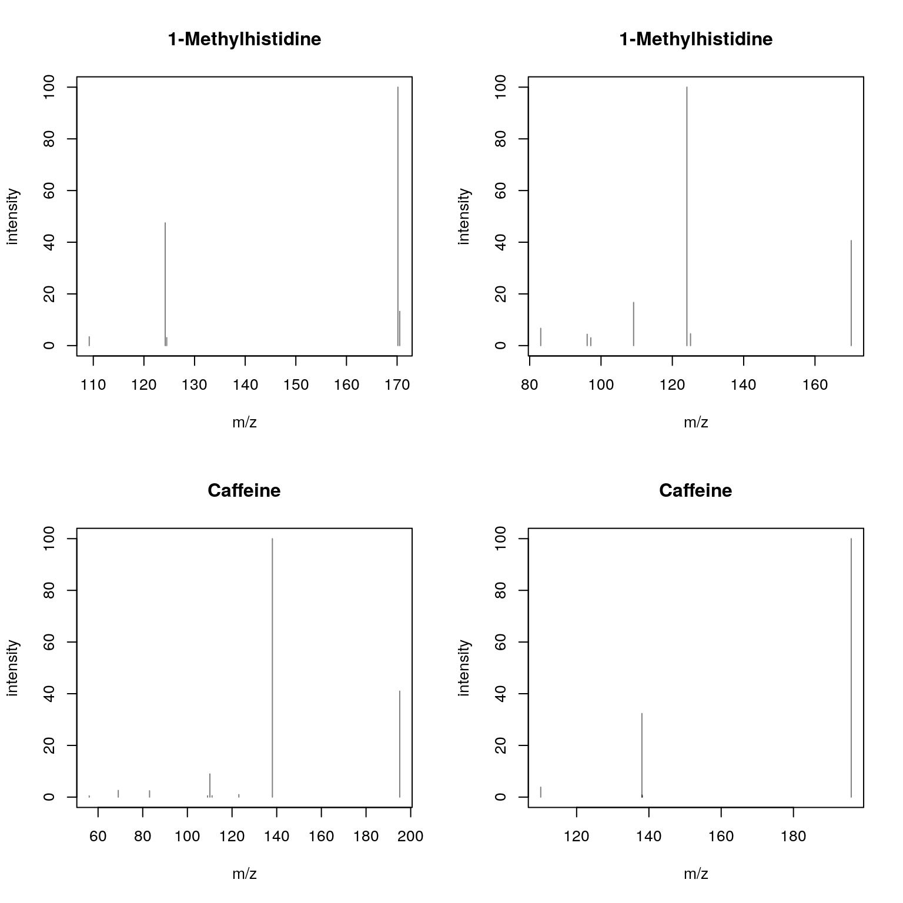
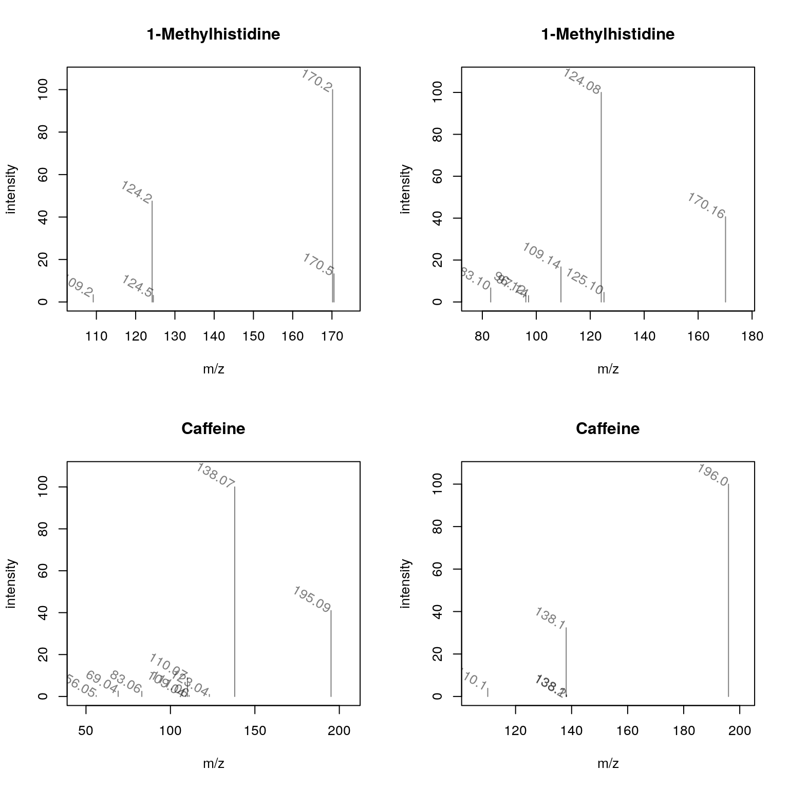
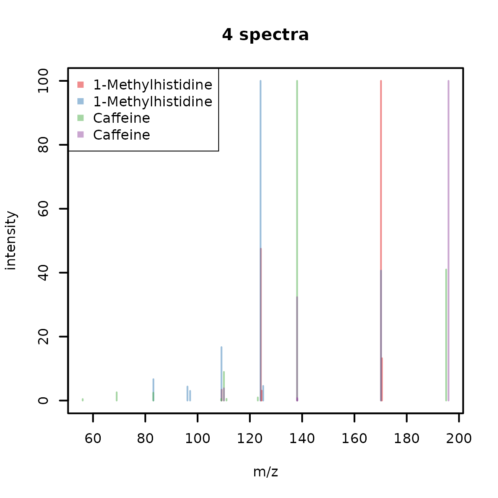

Package: Spectra
Authors: RforMassSpectrometry Package Maintainer [cre], Laurent Gatto [aut] (https://orcid.org/0000-0002-1520-2268), Johannes Rainer [aut] (https://orcid.org/0000-0002-6977-7147), Sebastian Gibb [aut] (https://orcid.org/0000-0001-7406-4443)
Last modified: 2020-12-08 14:08:05
Compiled: Tue Dec 8 14:27:28 2020
The Spectra package provides a scalable and flexible infrastructure to represent, retrieve and handle mass spectrometry (MS) data. The Spectra object provides the user with a single standardized interface to access and manipulate MS data while supporting, through the concept of exchangeable backends, a large variety of different ways to store and retrieve mass spectrometry data. Such backends range from mzML/mzXML/CDF files, simple flat files, or database systems.
The package can be installed with the BiocManager package. To install BiocManager use install.packages("BiocManager") and, after that, BiocManager::install("Spectra") to install Spectra.
Mass spectrometry data in Spectra objects can be thought of as a list of individual spectra, with each spectrum having a set of variables associated with it. Besides core spectra variables (such as MS level or retention time) an arbitrary number of optional variables can be assigned to a spectrum. The core spectra variables all have their own accessor method and it is guaranteed that a value is returned by it (or NA if the information is not available). The core variables and their data type are (alphabetically ordered):
integer(1): the index of acquisition of a spectrum during a MS run.logical(1): whether the spectrum is in profile or centroid mode.numeric(1): collision energy used to create an MSn spectrum.character(1): the origin of the spectrum’s data, e.g. the mzML file from which it was read.character(1): the (current) storage location of the spectrum data. This value depends on the backend used to handle and provide the data. For an in-memory backend like the MsBackendDataFrame this will be "<memory>", for an on-disk backend such as the MsBackendHdf5Peaks it will be the name of the HDF5 file where the spectrum’s peak data is stored.numeric: intensity values for the spectrum’s peaks.numeric(1): lower m/z for the isolation window in which the (MSn) spectrum was measured.numeric(1): the target m/z for the isolation window in which the (MSn) spectrum was measured.numeric(1): upper m/z for the isolation window in which the (MSn) spectrum was measured.integer(1): the MS level of the spectrum.numeric: the m/z values for the spectrum’s peaks.integer(1): the polarity of the spectrum (0 and 1 representing negative and positive polarity, respectively).integer(1): the scan (acquisition) number of the precursor for an MSn spectrum.integer(1): the charge of the precursor of an MSn spectrum.numeric(1): the intensity of the precursor of an MSn spectrum.numeric(1): the m/z of the precursor of an MSn spectrum.numeric(1): the retention time of a spectrum.integer(1): the index of a spectrum within a (raw) file.logical(1): whether the spectrum was smoothed.For details on the individual variables and their getter/setter function see the help for Spectra (?Spectra). Also note that these variables are suggested, but not required to characterize a spectrum. Also, some only make sense for MSn, but not for MS1 spectra.
Spectra objectsThe simplest way to create a Spectra object is by defining a DataFrame with the corresponding spectra data (using the corresponding spectra variable names as column names) and passing that to the Spectra constructor function. Below we create such an object for a set of 3 spectra providing their MS level, polarity but also additional annotations such as their ID in HMDB (human metabolome database) and their name. The m/z and intensity values for each spectrum have to be provided as a list of numeric values.
library(Spectra)
spd <- DataFrame(
msLevel = c(2L, 2L, 2L),
polarity = c(1L, 1L, 1L),
id = c("HMDB0000001", "HMDB0000001", "HMDB0001847"),
name = c("1-Methylhistidine", "1-Methylhistidine", "Caffeine"))
## Assign m/z and intensity values.
spd$mz <- list(
c(109.2, 124.2, 124.5, 170.16, 170.52),
c(83.1, 96.12, 97.14, 109.14, 124.08, 125.1, 170.16),
c(56.0494, 69.0447, 83.0603, 109.0395, 110.0712,
111.0551, 123.0429, 138.0662, 195.0876))
spd$intensity <- list(
c(3.407, 47.494, 3.094, 100.0, 13.240),
c(6.685, 4.381, 3.022, 16.708, 100.0, 4.565, 40.643),
c(0.459, 2.585, 2.446, 0.508, 8.968, 0.524, 0.974, 100.0, 40.994))
sps <- Spectra(spd)
sps## MSn data (Spectra) with 3 spectra in a MsBackendDataFrame backend:
## msLevel rtime scanIndex
## <integer> <numeric> <integer>
## 1 2 NA NA
## 2 2 NA NA
## 3 2 NA NA
## ... 18 more variables/columns.Alternatively, it is possible to import spectra data from mass spectrometry raw files in mzML/mzXML or CDF format. Below we create a Spectra object from two mzML files and define to use a MsBackendMzR backend to store the data (note that this requires the mzR package to be installed). This backend, specifically designed for raw MS data, keeps only a subset of spectra variables in memory while reading the m/z and intensity values from the original data files only on demand. See section Backends for more details on backends and their properties.
fls <- dir(system.file("sciex", package = "msdata"), full.names = TRUE)
sps_sciex <- Spectra(fls, backend = MsBackendMzR())
sps_sciex## MSn data (Spectra) with 1862 spectra in a MsBackendMzR backend:
## msLevel rtime scanIndex
## <integer> <numeric> <integer>
## 1 1 0.280 1
## 2 1 0.559 2
## 3 1 0.838 3
## 4 1 1.117 4
## 5 1 1.396 5
## ... ... ... ...
## 1858 1 258.636 927
## 1859 1 258.915 928
## 1860 1 259.194 929
## 1861 1 259.473 930
## 1862 1 259.752 931
## ... 33 more variables/columns.
##
## file(s):
## 20171016_POOL_POS_1_105-134.mzML
## 20171016_POOL_POS_3_105-134.mzMLThe Spectra object sps_sciex allows now to access spectra data from 1862 MS1 spectra and uses MsBackendMzR as backend (the Spectra object sps created in the previous code block uses the default MsBackendDataFrame).
As detailed above Spectra objects can contain an arbitrary number of properties of a spectrum (so called spectra variables). The available variables can be listed with the spectraVariables method:
spectraVariables(sps)## [1] "msLevel" "rtime"
## [3] "acquisitionNum" "scanIndex"
## [5] "dataStorage" "dataOrigin"
## [7] "centroided" "smoothed"
## [9] "polarity" "precScanNum"
## [11] "precursorMz" "precursorIntensity"
## [13] "precursorCharge" "collisionEnergy"
## [15] "isolationWindowLowerMz" "isolationWindowTargetMz"
## [17] "isolationWindowUpperMz" "id"
## [19] "name"
spectraVariables(sps_sciex)## [1] "msLevel" "rtime"
## [3] "acquisitionNum" "scanIndex"
## [5] "dataStorage" "dataOrigin"
## [7] "centroided" "smoothed"
## [9] "polarity" "precScanNum"
## [11] "precursorMz" "precursorIntensity"
## [13] "precursorCharge" "collisionEnergy"
## [15] "isolationWindowLowerMz" "isolationWindowTargetMz"
## [17] "isolationWindowUpperMz" "peaksCount"
## [19] "totIonCurrent" "basePeakMZ"
## [21] "basePeakIntensity" "ionisationEnergy"
## [23] "lowMZ" "highMZ"
## [25] "mergedScan" "mergedResultScanNum"
## [27] "mergedResultStartScanNum" "mergedResultEndScanNum"
## [29] "injectionTime" "filterString"
## [31] "spectrumId" "ionMobilityDriftTime"
## [33] "scanWindowLowerLimit" "scanWindowUpperLimit"The two Spectra contain a different set of variables: besides "msLevel", "polarity", "id" and "name", that were specified for the Spectra object sps, it contains more variables such as "rtime", "acquisitionNum" and "scanIndex". These are part of the core variables defining a spectrum and for all of these accessor methods exist. Below we use msLevel and rtime to access the MS levels and retention times for the spectra in sps.
msLevel(sps)## [1] 2 2 2
rtime(sps)## [1] NA NA NAWe did not specify retention times for the spectra in sps thus NA is returned for them. The Spectra object sps_sciex contains many more variables, all of which were extracted from the mzML files. Below we extract the retention times for the first spectra in the object.
head(rtime(sps_sciex))## [1] 0.280 0.559 0.838 1.117 1.396 1.675Note that in addition to the accessor functions it is also possible to use $ to extract a specific spectra variable. To extract the name of the compounds in sps we can use sps$name, or, to extract the MS levels sps$msLevel.
sps$name## [1] "1-Methylhistidine" "1-Methylhistidine" "Caffeine"
sps$msLevel## [1] 2 2 2We could also replace specific spectra variables using either the dedicated method or $. Below we specify that all spectra in sps represent centroided data.
sps$centroided <- TRUE
centroided(sps)## [1] TRUE TRUE TRUEThe $ operator can also be used to add arbitrary new spectra variables to a Spectra object. Below we add the SPLASH key to each of the spectra.
sps$splash <- c(
"splash10-00di-0900000000-037d24a7d65676b7e356",
"splash10-00di-0900000000-03e99316bd6c098f5d11",
"splash10-000i-0900000000-9af60e39c843cb715435")This new spectra variable will now be listed as an additional variable in the result of the spectraVariables function and we can directly access its content with sps$splash.
Each spectrum can have a different number of mass peaks, each consisting of a mass-to-charge (m/z) and associated intensity value. These can be extracted with the mz or intensity functions, each of which return a list of numeric values.
mz(sps)## NumericList of length 3
## [[1]] 109.2 124.2 124.5 170.16 170.52
## [[2]] 83.1 96.12 97.14 109.14 124.08 125.1 170.16
## [[3]] 56.0494 69.0447 83.0603 109.0395 110.0712 111.0551 123.0429 138.0662 195.0876
intensity(sps)## NumericList of length 3
## [[1]] 3.407 47.494 3.094 100 13.24
## [[2]] 6.685 4.381 3.022 16.708 100 4.565 40.643
## [[3]] 0.459 2.585 2.446 0.508 8.968 0.524 0.974 100 40.994Peak data can also be extracted with the peaksData function that returns a list of matrices, each with columns "mz" and "intensity" containing the m/z and intensity values for one spectrum.
pks <- peaksData(sps)
pks[[1]]## mz intensity
## [1,] 109.20 3.407
## [2,] 124.20 47.494
## [3,] 124.50 3.094
## [4,] 170.16 100.000
## [5,] 170.52 13.240Note that we would get the same result by using the as method to coerce a Spectra object to a list or SimpleList:
as(sps, "SimpleList")## List of length 3The spectraData function returns a DataFrame with the full data for each spectrum (except m/z and intensity values), or with selected spectra variables (which can be specified with the columns parameter). Below we extract the spectra data for variables "msLevel", "id" and "name".
spectraData(sps, columns = c("msLevel", "id", "name"))## DataFrame with 3 rows and 3 columns
## msLevel id name
## <integer> <character> <character>
## 1 2 HMDB0000001 1-Methylhistidine
## 2 2 HMDB0000001 1-Methylhistidine
## 3 2 HMDB0001847 CaffeineSpectra are one-dimensional objects storing spectra, even from different files or samples, in a single list. Specific variables have thus to be used to define the originating file from which they were extracted or the sample in which they were measured. The data origin of each spectrum can be extracted with the dataOrigin function. For sps, the Spectra created from a DataFrame, this will be NA because we did not specify the data origin:
dataOrigin(sps)## [1] NA NA NAdataOrigin for sps_sciex, the Spectra which was initialized with data from mzML files, in contrast, returns the originating file names:
## [1] "20171016_POOL_POS_1_105-134.mzML" "20171016_POOL_POS_1_105-134.mzML"
## [3] "20171016_POOL_POS_1_105-134.mzML" "20171016_POOL_POS_1_105-134.mzML"
## [5] "20171016_POOL_POS_1_105-134.mzML" "20171016_POOL_POS_1_105-134.mzML"The current data storage location of a spectrum can be retrieved with the dataStorage variable, which will return an arbitrary string for Spectra that use an in-memory backend or the file where the data is stored for on-disk backends:
dataStorage(sps)## [1] "<memory>" "<memory>" "<memory>"## [1] "20171016_POOL_POS_1_105-134.mzML" "20171016_POOL_POS_1_105-134.mzML"
## [3] "20171016_POOL_POS_1_105-134.mzML" "20171016_POOL_POS_1_105-134.mzML"
## [5] "20171016_POOL_POS_1_105-134.mzML" "20171016_POOL_POS_1_105-134.mzML"Apart from classical subsetting operations such as [ and split, a set of filter functions are defined for Spectra objects (for detailed help please see the ?Spectra help):
filterAcquisitionNum: retain spectra with certain acquisition numbers.filterDataOrigin: subset to spectra from specific origins.filterDataStorage: subset to spectra from certain data storage files.filterEmptySpectra: remove spectra without mass peaks.filterMzRange: subset spectra keeping only peaks with an m/z within the provided m/z range.filterMzValues: subset spectra keeping only peaks matching provided m/z value(s).filterIsolationWindow: keep spectra with the provided mz in their isolation window (m/z range).filterMsLevel: filter by MS level.filterPolarity: filter by polarity.filterPrecursorMz: retain (MSn) spectra with a precursor m/z within the provided m/z range.filterPrecursorScan: retain (parent and children) scans of an acquisition number.filterRt: filter based on retention time ranges.In the example below we select all spectra measured in the second mzML file and subsequently filter them to retain spectra measured between 175 and 189 seconds in the measurement run.
fls <- unique(dataOrigin(sps_sciex))
file_2 <- filterDataOrigin(sps_sciex, dataOrigin = fls[2])
length(file_2)## [1] 931## [1] 50In addition, Spectra support also subsetting with [. Below we perform the filtering above with [ -based subsetting.
sps_sciex[sps_sciex$dataOrigin == fls[2] &
sps_sciex$rtime >= 175 &
sps_sciex$rtime <= 189]## MSn data (Spectra) with 50 spectra in a MsBackendMzR backend:
## msLevel rtime scanIndex
## <integer> <numeric> <integer>
## 1 1 175.212 628
## 2 1 175.491 629
## 3 1 175.770 630
## 4 1 176.049 631
## 5 1 176.328 632
## ... ... ... ...
## 46 1 187.768 673
## 47 1 188.047 674
## 48 1 188.326 675
## 49 1 188.605 676
## 50 1 188.884 677
## ... 33 more variables/columns.
##
## file(s):
## 20171016_POOL_POS_3_105-134.mzMLThe equivalent using filter function is shown below, with the added benefit that the filtering is recorded in the processing slot.
library("magrittr")
sps_sciex %>%
filterDataOrigin(fls[2]) %>%
filterRt(c(175, 189))## MSn data (Spectra) with 50 spectra in a MsBackendMzR backend:
## msLevel rtime scanIndex
## <integer> <numeric> <integer>
## 1 1 175.212 628
## 2 1 175.491 629
## 3 1 175.770 630
## 4 1 176.049 631
## 5 1 176.328 632
## ... ... ... ...
## 46 1 187.768 673
## 47 1 188.047 674
## 48 1 188.326 675
## 49 1 188.605 676
## 50 1 188.884 677
## ... 33 more variables/columns.
##
## file(s):
## 20171016_POOL_POS_3_105-134.mzML
## Processing:
## Filter: select data origin(s) /__w/_temp/Library/msdata/sciex/20171016_POOL_POS_3_105-134.mzML [Tue Dec 8 14:27:32 2020]
## Filter: select retention time [175..189] on MS level(s) 1 [Tue Dec 8 14:27:32 2020]Note that the use of the filter functions might be more efficient for some backends, depending on their implementation, (e.g. database-based backends could translate the filter function into a SQL condition to perform the subsetting already within the database).
Multiple Spectra objects can also be combined into a single Spectra with the c function. The resulting Spectra object will contain an union of the spectra variables of the individual objects. Below we combine the Spectra object sps with an additional object containing another MS2 spectrum for Caffeine.
caf_df <- DataFrame(msLevel = 2L, name = "Caffeine",
id = "HMDB0001847",
instrument = "Agilent 1200 RRLC; Agilent 6520 QTOF",
splash = "splash10-0002-0900000000-413259091ba7edc46b87",
centroided = TRUE)
caf_df$mz <- list(c(110.0710, 138.0655, 138.1057, 138.1742, 195.9864))
caf_df$intensity <- list(c(3.837, 32.341, 0.84, 0.534, 100))
caf <- Spectra(caf_df)Next we combine the two objects.
sps <- c(sps, caf)
sps## MSn data (Spectra) with 4 spectra in a MsBackendDataFrame backend:
## msLevel rtime scanIndex
## <integer> <numeric> <integer>
## 1 2 NA NA
## 2 2 NA NA
## 3 2 NA NA
## 4 2 NA NA
## ... 20 more variables/columns.
## Processing:
## Merge 2 Spectra into one [Tue Dec 8 14:27:32 2020]The resulting object contains now the data for all 4 MS2 spectra and an union of all spectra variables from both objects.
spectraVariables(sps)## [1] "msLevel" "rtime"
## [3] "acquisitionNum" "scanIndex"
## [5] "dataStorage" "dataOrigin"
## [7] "centroided" "smoothed"
## [9] "polarity" "precScanNum"
## [11] "precursorMz" "precursorIntensity"
## [13] "precursorCharge" "collisionEnergy"
## [15] "isolationWindowLowerMz" "isolationWindowTargetMz"
## [17] "isolationWindowUpperMz" "id"
## [19] "name" "splash"
## [21] "instrument"The second object had an additional spectra variable instrument that was not present in sps and all the spectra in this object will thus get a value of NA for this variable.
sps$instrument## [1] NA
## [2] NA
## [3] NA
## [4] "Agilent 1200 RRLC; Agilent 6520 QTOF"Sometimes not all spectra variables might be required (e.g. also because many of them are empty). This might be specifically interesting also for Spectra containing the data from very large experiments, because it can significantly reduce the object’s size in memory. In such cases the selectSpectraVariables function can be used to retain only specified spectra variables.
Some analyses require manipulation of the mass peak data (i.e. the m/z and/or intensity values). One example would be to remove all peaks from a spectrum that have an intensity lower than a certain threshold. Below we perform such an operation with the replaceIntensitiesBelow function to replace peak intensities below 10 in each spectrum in sps with a value of 0.
sps_rep <- replaceIntensitiesBelow(sps, threshold = 10, value = 0)As a result intensities below 10 were set to 0 for all peaks.
intensity(sps_rep)## NumericList of length 4
## [[1]] 0 47.494 0 100 13.24
## [[2]] 0 0 0 16.708 100 0 40.643
## [[3]] 0 0 0 0 0 0 0 100 40.994
## [[4]] 0 32.341 0 0 100Zero-intensity peaks (and peaks with missing intensities) can then be removed with the filterIntensity function specifying a lower required intensity level or optionally also an upper intensity limit.
sps_rep <- filterIntensity(sps_rep, intensity = c(0.1, Inf))
intensity(sps_rep)## NumericList of length 4
## [[1]] 47.494 100 13.24
## [[2]] 16.708 100 40.643
## [[3]] 100 40.994
## [[4]] 32.341 100The filterIntensity supports also a user-provided function to be passed with parameter intensity which would allow e.g. to remove peaks smaller than the median peak intensity of a spectrum. See examples in the ?filterIntensity help page for details.
Note that any data manipulations on Spectra objects are not immediately applied to the peak data. They are added to a so called processing queue which is applied each time peak data is accessed (with the peaksData, mz or intensity functions). Thanks to this processing queue data manipulation operations are also possible for read-only backends (e.g. mzML-file based backends or database-based backends). The information about the number of such processing steps can be seen below (next to Lazy evaluation queue).
sps_rep## MSn data (Spectra) with 4 spectra in a MsBackendDataFrame backend:
## msLevel rtime scanIndex
## <integer> <numeric> <integer>
## 1 2 NA NA
## 2 2 NA NA
## 3 2 NA NA
## 4 2 NA NA
## ... 20 more variables/columns.
## Lazy evaluation queue: 2 processing step(s)
## Processing:
## Merge 2 Spectra into one [Tue Dec 8 14:27:32 2020]
## Signal <= 10 in MS level(s) 2 set to 0 [Tue Dec 8 14:27:32 2020]
## Remove peaks with intensities outside [0.1, Inf] in spectra of MS level(s) 2. [Tue Dec 8 14:27:32 2020]It is possible to add also custom functions to the processing queue of a Spectra object. Such a function must take a peaks matrix as its first argument, have ... in the function definition and must return a peaks matrix (a peaks matrix is a numeric two-column matrix with the first column containing the peaks’ m/z values and the second the corresponding intensities). Below we define a function that divides the intensities of each peak by a value which can be passed with argument y.
## Define a function that takes a matrix as input, divides the second
## column by parameter y and returns it. Note that ... is required in
## the function's definition.
divide_intensities <- function(x, y, ...) {
x[, 2] <- x[, 2] / y
x
}
## Add the function to the procesing queue
sps_2 <- addProcessing(sps_rep, divide_intensities, y = 2)
sps_2## MSn data (Spectra) with 4 spectra in a MsBackendDataFrame backend:
## msLevel rtime scanIndex
## <integer> <numeric> <integer>
## 1 2 NA NA
## 2 2 NA NA
## 3 2 NA NA
## 4 2 NA NA
## ... 20 more variables/columns.
## Lazy evaluation queue: 3 processing step(s)
## Processing:
## Merge 2 Spectra into one [Tue Dec 8 14:27:32 2020]
## Signal <= 10 in MS level(s) 2 set to 0 [Tue Dec 8 14:27:32 2020]
## Remove peaks with intensities outside [0.1, Inf] in spectra of MS level(s) 2. [Tue Dec 8 14:27:32 2020]Object sps_2 has now 3 processing steps in its lazy evaluation queue. Calling intensity on this object will now return intensities that are half of the intensities of the original objects sps.
intensity(sps_2)## NumericList of length 4
## [[1]] 23.747 50 6.62
## [[2]] 8.354 50 20.3215
## [[3]] 50 20.497
## [[4]] 16.1705 50
intensity(sps_rep)## NumericList of length 4
## [[1]] 47.494 100 13.24
## [[2]] 16.708 100 40.643
## [[3]] 100 40.994
## [[4]] 32.341 100Alternatively we could define a function that returns the maximum peak from each spectrum:
max_peak <- function(x, ...) {
x[which.max(x[, 2]), , drop = FALSE]
}
sps_2 <- addProcessing(sps_rep, max_peak)
lengths(sps_2)## [1] 1 1 1 1
intensity(sps_2)## NumericList of length 4
## [[1]] intensity=100
## [[2]] intensity=100
## [[3]] intensity=100
## [[4]] intensity=100Each spectrum in sps_2 thus contains only a single peak. The original data can be restored with the reset function which will empty the lazy evaluation queue and call the reset method on the storage backend. Below we call reset on the sps_2 object and hence restore the data to its original state.
sps_2_rest <- reset(sps_2)
intensity(sps_2_rest)## NumericList of length 4
## [[1]] 3.407 47.494 3.094 100 13.24
## [[2]] 6.685 4.381 3.022 16.708 100 4.565 40.643
## [[3]] 0.459 2.585 2.446 0.508 8.968 0.524 0.974 100 40.994
## [[4]] 3.837 32.341 0.84 0.534 100
intensity(sps)## NumericList of length 4
## [[1]] 3.407 47.494 3.094 100 13.24
## [[2]] 6.685 4.381 3.022 16.708 100 4.565 40.643
## [[3]] 0.459 2.585 2.446 0.508 8.968 0.524 0.974 100 40.994
## [[4]] 3.837 32.341 0.84 0.534 100Finally, for Spectra that use a writeable backend, such as the MsBackendDataFrame or MsBackendHdf5Peaks, it is possible to apply the processing queue to the peak data and write that back to the data storage with the applyProcessing function. Below we use this to make all data manipulations on peak data of the sps_rep object persistent.
length(sps_rep@processingQueue)## [1] 2
sps_rep <- applyProcessing(sps_rep)
length(sps_rep@processingQueue)## [1] 0
sps_rep## MSn data (Spectra) with 4 spectra in a MsBackendDataFrame backend:
## msLevel rtime scanIndex
## <integer> <numeric> <integer>
## 1 2 NA NA
## 2 2 NA NA
## 3 2 NA NA
## 4 2 NA NA
## ... 20 more variables/columns.
## Processing:
## Merge 2 Spectra into one [Tue Dec 8 14:27:32 2020]
## Signal <= 10 in MS level(s) 2 set to 0 [Tue Dec 8 14:27:32 2020]
## Remove peaks with intensities outside [0.1, Inf] in spectra of MS level(s) 2. [Tue Dec 8 14:27:32 2020]
## Applied processing queue with 2 steps [Tue Dec 8 14:27:33 2020]Before applyProcessing the lazy evaluation queue contained 2 processing steps, which were then applied to the peak data and written to the data storage. Note that calling reset after applyProcessing can no longer restore the data.
Spectra can be compared with the compareSpectra function, that allows to calculate similarities between spectra using a variety of methods. However, peaks from the compared spectra have to be first matched before similarities can be calculated. compareSpectra uses by default the [joinPeaks()] function from the MsCoreUtils package but supports also other mapping functions to be passed with the MAPFUN parameter (see ?joinPeaks man page in MsCoreUtils for more details). The similarity calculation function can be specified with the FUN parameter and defaults to [ndotproduct()], the normalized dot-product. Below we calculate pairwise similarities between all spectra in sps accepting a 50 ppm difference of peaks’ m/z values for being considered matching.
compareSpectra(sps, ppm = 50)## [,1] [,2] [,3] [,4]
## [1,] 1.0000000 0.1380817 0.0000000 0.0000000
## [2,] 0.1380817 1.0000000 0.0000000 0.0000000
## [3,] 0.0000000 0.0000000 1.0000000 0.1817149
## [4,] 0.0000000 0.0000000 0.1817149 1.0000000The resulting matrix represents the result from the pairwise comparison. As expected, the first two and the last two spectra are similar, albeit only moderately while the spectra from 1-Methylhistidine don’t share any similarity with those of Caffeine.
Spectra
The Spectra package provides the following functions to visualize spectra data: - plotSpectra: plot each spectrum in Spectra in its own panel. - plotSpectraOverlay: plot multiple spectra into the same plot.
Below we use plotSpectra to plot the 4 spectra from the sps object using their names (as provided in spectra variable "name") as plot titles.
plotSpectra(sps, main = sps$name)
It is also possible to label individual peaks in each plot. Below we use the m/z value of each peak as its label. In the example we define a function that accesses information from each spectrum (z) and returns a character for each peak with the text that should be used as label. Parameters labelSrt, labelPos and labelOffset define the rotation of the label text and its position relative to the x and y coordinates of the peak.
plotSpectra(sps, main = sps$name,
labels = function(z) format(mz(z)[[1L]], digits = 4),
labelSrt = -30, labelPos = 2, labelOffset = 0.1)
These plots are rather busy and for some peaks the m/z values are overplotted. Below we define a label function that will only indicate the m/z of peaks with an intensity higher than 30.
mzLabel <- function(z) {
z <- peaksData(z)[[1L]]
lbls <- format(z[, "mz"], digits = 4)
lbls[z[, "intensity"] < 30] <- ""
lbls
}
plotSpectra(sps, main = sps$name, labels = mzLabel,
labelSrt = -30, labelPos = 2, labelOffset = 0.1)Sometimes it might be of interest to plot multiple spectra into the same plot (e.g. to directly compare peaks from multiple spectra). This can be done with plotSpectraOverlay which we use below to create an overlay-plot of our 4 example spectra, using a different color for each spectrum.
cols <- c("#E41A1C80", "#377EB880", "#4DAF4A80", "#984EA380")
plotSpectraOverlay(sps, lwd = 2, col = cols)
legend("topleft", col = cols, legend = sps$name, pch = 15)
Lastly, plotSpectraMirror allows to plot two spectra against each other as a mirror plot which is ideal to visualize spectra comparison results. Below we plot a spectrum of 1-Methylhistidine against one of Caffeine.
plotSpectraMirror(sps[1], sps[3])The upper panel shows the spectrum from 1-Methylhistidine, the lower the one of Caffeine. None of the peaks of the two spectra match. Below we plot the two spectra of 1-Methylhistidine and the two of Caffeine against each other matching peaks with a ppm of 50.
par(mfrow = c(1, 2))
plotSpectraMirror(sps[1], sps[2], main = "1-Methylhistidine", ppm = 50)
plotSpectraMirror(sps[3], sps[4], main = "Caffeine", ppm = 50)See also ?plotSpectra for more plotting options and examples.
Spectra data can be exported with the export method. This method takes the Spectra that is supposed to be exported and the backend (parameter backend) which should be used to export the data and additional parameters for the export function of this backend. The backend thus defines the format of the exported file. Note however that not all MsBackend classes might support data export. The backend classes currently supporting data export and its format are: - MsBackendMzR (Spectra package): export data in mzML and mzXML format. Can not export all custom, user specified spectra variables. - MsBackendMgf (MsBackendMgf package): exports data in Mascot Generic Format (mgf). Exports all spectra variables as individual spectrum fields in the mgf file.
In the example below we use the MsBackendMzR to export all spectra from the variable sps to an mzML file. We thus pass the data, the backend that should be used for the export and the file name of the result file (a temporary file) to the export function (see also the help page of the export,MsBackendMzR function for additional supported parameters).
fl <- tempfile()
export(sps, MsBackendMzR(), file = fl)## Writing file filed9139753801...OKTo evaluate which of the spectra variables were exported, we load the exported data again and identify spectra variables in the original file which could not be exported (because they are not defined variables in the mzML standard).
sps_im <- Spectra(backendInitialize(MsBackendMzR(), fl))
spectraVariables(sps)[!spectraVariables(sps) %in% spectraVariables(sps_im)]## [1] "id" "name" "splash" "instrument"These additional variables were thus not exported. How data export is performed and handled depends also on the used backend. The MsBackendMzR for example exports all spectra by default to a single file (specified with the file parameter), but it allows also to specify for each individual spectrum in the Spectra to which file it should be exported (parameter file has thus to be of length equal to the number of spectra). As an example we export below the spectrum 1 and 3 to one file and spectra 2 and 4 to another.
## Writing file filed91560b8c58...OK
## Writing file filed9116edb5ac...OKA more realistic use case for mzML export would be to export MS data after processing, such as smoothing (using the smooth function) and centroiding (using the pickPeaks function) of raw profile-mode MS data.
In the previous sections we learned already that a Spectra object can use different backends for the actual data handling. It is also possible to change the backend of a Spectra to a different one with the setBackend function. We could for example change the (MsBackendMzR) backend of the sps_sciex object to a MsBackendDataFrame backend to enable use of the data even without the need to keep the original mzML files. Below we change the backend of sps_sciex to the in-memory MsBackendDataFrame backend.
print(object.size(sps_sciex), units = "Mb")## 0.4 Mb
sps_sciex <- setBackend(sps_sciex, MsBackendDataFrame())
sps_sciex## MSn data (Spectra) with 1862 spectra in a MsBackendDataFrame backend:
## msLevel rtime scanIndex
## <integer> <numeric> <integer>
## 1 1 0.280 1
## 2 1 0.559 2
## 3 1 0.838 3
## 4 1 1.117 4
## 5 1 1.396 5
## ... ... ... ...
## 1858 1 258.636 927
## 1859 1 258.915 928
## 1860 1 259.194 929
## 1861 1 259.473 930
## 1862 1 259.752 931
## ... 33 more variables/columns.
## Processing:
## Switch backend from MsBackendMzR to MsBackendDataFrame [Tue Dec 8 14:27:37 2020]With the call the full peak data was imported from the original mzML files into the object. This has obviously an impact on the object’s size, which is now much larger than before.
print(object.size(sps_sciex), units = "Mb")## 52.4 MbThe dataStorage spectrum variable has now changed, while dataOrigin still keeps the information about the originating files:
head(dataStorage(sps_sciex))## [1] "<memory>" "<memory>" "<memory>" "<memory>" "<memory>" "<memory>"## [1] "20171016_POOL_POS_1_105-134.mzML" "20171016_POOL_POS_1_105-134.mzML"
## [3] "20171016_POOL_POS_1_105-134.mzML" "20171016_POOL_POS_1_105-134.mzML"
## [5] "20171016_POOL_POS_1_105-134.mzML" "20171016_POOL_POS_1_105-134.mzML"Most functions on Spectra support (and use) parallel processing out of the box. Peak data access and manipulation methods perform by default parallel processing on a per-file basis (i.e. using the dataStorage variable as splitting factor). Spectra uses BiocParallel for parallel processing and all functions use the default registered parallel processing setup of that package.
Backends allow to use different backends to store mass spectrometry data while providing via the Spectra class a unified interface to use that data. The Spectra package defines a set of example backends but any object extending the base MsBackend class could be used instead. The default backends are:
MsBackendDataFrame: the mass spectrometry data is stored (in-memory) in a DataFrame. Keeping the data in memory guarantees high performance but has also, depending on the number of mass peaks in each spectrum, a much higher memory footprint.
MsBackendMzR: this backend keeps only general spectra variables in memory and relies on the mzR package to read mass peaks (m/z and intensity values) from the original MS files on-demand.
MsBackendHdf5Peaks: similar to MsBackendMzR this backend reads peak data only on-demand from disk while all other spectra variables are kept in memory. The peak data are stored in Hdf5 files which guarantees scalability.
All of the above mentioned backends support changing all of their their spectra variables, except the MsBackendMzR that does not support changing m/z or intensity values for the mass peaks.
With the example below we load the data from a single mzML file and use a MsBackendHdf5Peaks backend for data storage. The hdf5path parameter allows us to specify the storage location of the HDF5 file.
library(msdata)
fl <- proteomics(full.names = TRUE)[5]
sps_tmt <- Spectra(fl, backend = MsBackendHdf5Peaks(), hdf5path = tempdir())
head(basename(dataStorage(sps_tmt)))## [1] "TMT_Erwinia_1uLSike_Top10HCD_isol2_45stepped_60min_01.mzML.h5"
## [2] "TMT_Erwinia_1uLSike_Top10HCD_isol2_45stepped_60min_01.mzML.h5"
## [3] "TMT_Erwinia_1uLSike_Top10HCD_isol2_45stepped_60min_01.mzML.h5"
## [4] "TMT_Erwinia_1uLSike_Top10HCD_isol2_45stepped_60min_01.mzML.h5"
## [5] "TMT_Erwinia_1uLSike_Top10HCD_isol2_45stepped_60min_01.mzML.h5"
## [6] "TMT_Erwinia_1uLSike_Top10HCD_isol2_45stepped_60min_01.mzML.h5"## R Under development (unstable) (2020-12-04 r79554)
## Platform: x86_64-pc-linux-gnu (64-bit)
## Running under: Ubuntu 20.04.1 LTS
##
## Matrix products: default
## BLAS/LAPACK: /usr/lib/x86_64-linux-gnu/openblas-pthread/libopenblasp-r0.3.8.so
##
## locale:
## [1] LC_CTYPE=en_US.UTF-8 LC_NUMERIC=C
## [3] LC_TIME=en_US.UTF-8 LC_COLLATE=en_US.UTF-8
## [5] LC_MONETARY=en_US.UTF-8 LC_MESSAGES=C
## [7] LC_PAPER=en_US.UTF-8 LC_NAME=C
## [9] LC_ADDRESS=C LC_TELEPHONE=C
## [11] LC_MEASUREMENT=en_US.UTF-8 LC_IDENTIFICATION=C
##
## attached base packages:
## [1] parallel stats4 stats graphics grDevices utils datasets
## [8] methods base
##
## other attached packages:
## [1] msdata_0.31.0 magrittr_2.0.1 Spectra_1.1.10
## [4] ProtGenerics_1.23.4 BiocParallel_1.25.1 S4Vectors_0.29.5
## [7] BiocGenerics_0.37.0 BiocStyle_2.19.1
##
## loaded via a namespace (and not attached):
## [1] Rcpp_1.0.5 compiler_4.1.0 BiocManager_1.30.10
## [4] rhdf5filters_1.3.2 tools_4.1.0 ncdf4_1.17
## [7] digest_0.6.27 evaluate_0.14 memoise_1.1.0
## [10] rhdf5_2.35.0 rlang_0.4.9 yaml_2.2.1
## [13] pkgdown_1.6.1.9000 xfun_0.19 stringr_1.4.0
## [16] knitr_1.30 desc_1.2.0 fs_1.5.0
## [19] systemfonts_0.3.2 IRanges_2.25.4 MsCoreUtils_1.3.1
## [22] rprojroot_2.0.2 Biobase_2.51.0 R6_2.5.0
## [25] textshaping_0.2.1 rmarkdown_2.5 bookdown_0.21
## [28] Rhdf5lib_1.13.0 mzR_2.25.1 codetools_0.2-18
## [31] htmltools_0.5.0 MASS_7.3-53 assertthat_0.2.1
## [34] ragg_0.4.0 stringi_1.5.3 crayon_1.3.4